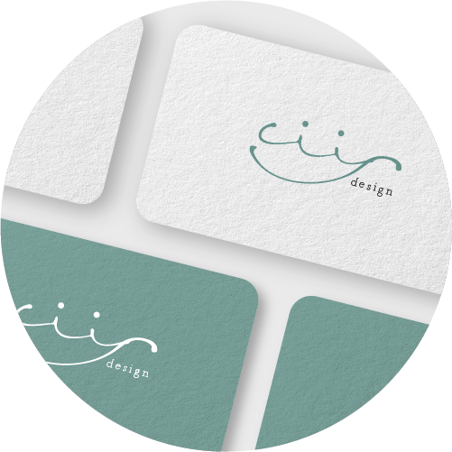
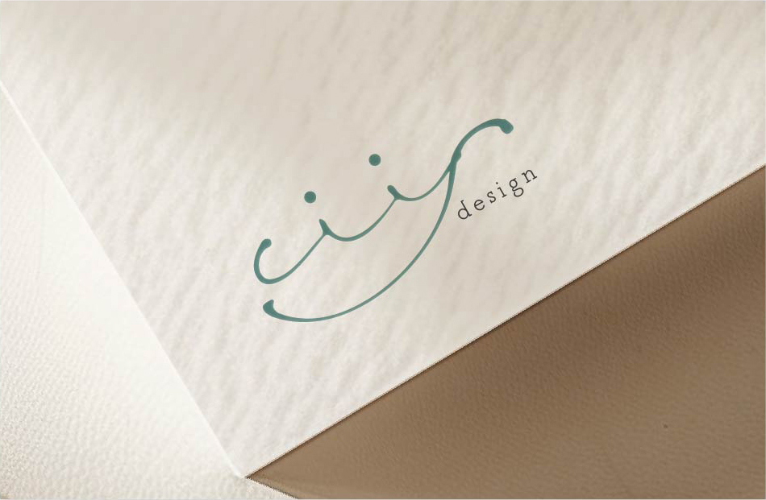

Works

Logo
ciis design ロゴ
- 作品概要
- 制作範囲
- 制作期間
- 使用ソフト
- デザイナーとしての屋号 ciis designの名刺やポートフォリオサイトで使用するロゴ
- デザイン
- 3日
- Illustrator
[ ciis (シーズ) ］は、わたしをつくるもの・大事なものとして家族の名前から一文字づつもらいました。
[ciis]を手書きし、柔らかい線でつながりや親しみやすさを意識して作成しました。
一筆書きのようにひとつにつながる線は手を取り合う様子を表し、また全体的に丸みをつけてニッコリ笑顔に見えるようにデザインしました。
くすませた青緑色は信頼感や安心感を表現しています。
このロゴには人と人のつながりを大事にし、デザインで笑顔にしたいとの想いを込めています。
